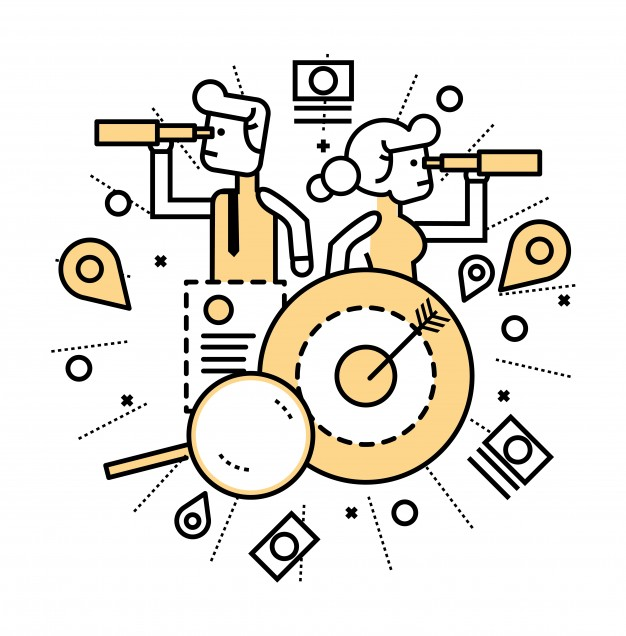

Clusters
1Seguridad
Se escogio este cluster ya que en las historias una cosa que siempre se recalcaba es el problema de la seguridad del Transmilenio y como esta no es lo que los usuarios merecen al estar tomando un servicio que lo proporciona la ciudad y es uno de los pocos que ofrece esta.
2Costo
Se escogio este cluster ya que en las historias una de las cosas que tiene varios puntos de vista es el precio del servicio ya que ahí un 50/50 en que su costo es muy acsecible o que es muy elevado para lo poco que ofrece.
3Calidad
Se escogio este cluster porque jutando todas las ideas generales todo apuntaba que los usuarios se quejan mucho por la calidad del servicio y que el dinero del pasaje nunca lo han visto reflejado en la mejora del transporte o en mejorar la seguridad de las estaciones haciendo que sea una idea que no tiene muchos usuarios enontra de esto.
Insights
1Seguridad
Los usuarios opinan que el sistema es inseguro
2Costo
tanto usuarios como empleados ven el servicio muy costoso
3Calidad
Para los usuarios el sistemas es pesimo pero para los trabajadores es util y rapido
Oportunidad de diseño
1Seguridad
¿Cómo podriamos redcir el costo del servicio de transmilenio?
2Costo
¿Cómo podriamos mejorar la seguridad del sistema sin la necesidad de personal adicional?
3Calidad
¿Cómo podrucir efectividad en los horarios de los buses del servicio?
Actividad de ideación

Integrantes

Juan David Cardenas
Ing Informatica

Diego Felipe Rodriguez
Ing Informatica